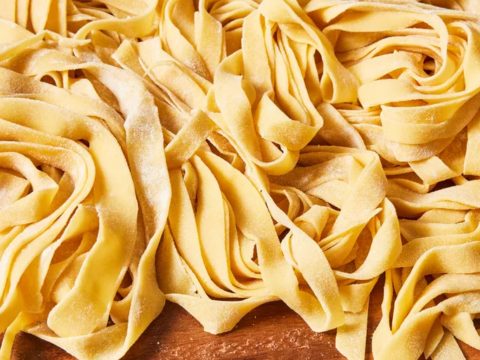

Pasta Recipe

Description
This homemade pasta recipe is consistently great and easy to make with flour, eggs, salt, olive oil, and water. Roll out by hand or use a pasta machine to cut dough into desired pasta shape.
Why buy the boxed stuff when you can make noodles at home? This homemade pasta recipe is way better than what you can buy at the store — and it’s surprisingly easy to throw together with just five ingredients you likely already have on hand!
Ingredients
- Flour: This homemade pasta recipe starts with two cups of all-purpose flour.
- Eggs: Eggs lend fat and moisture to the pasta dough.
- Oil: Two tablespoons of olive oil add moisture and help the dough come together.
- Salt: A teaspoon of salt takes the flavor up a notch.
- Water: Add just enough water to form a smooth, thick dough.
Steps
- Make the dough.
- Turn the dough out and knead it for 10 minutes.
- Let the dough rest.
- Divide the dough into balls.
- Use a pasta machine to roll and cut the dough into desired shapes.
Home